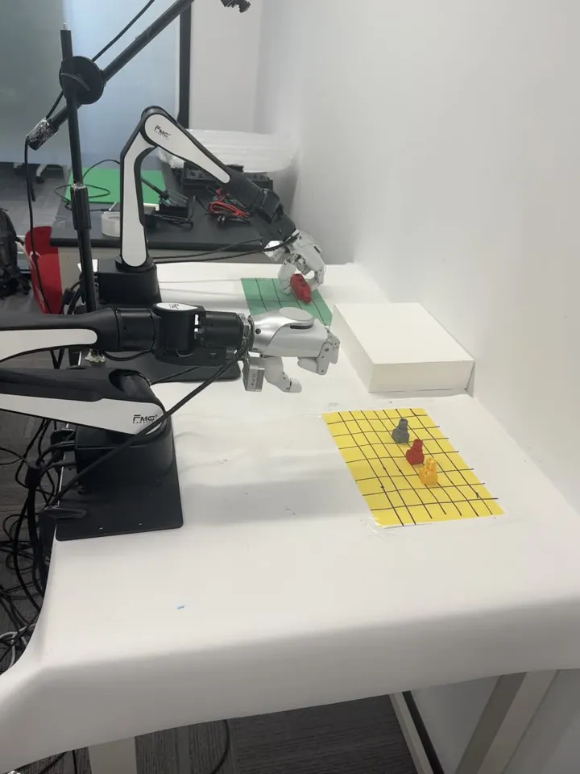
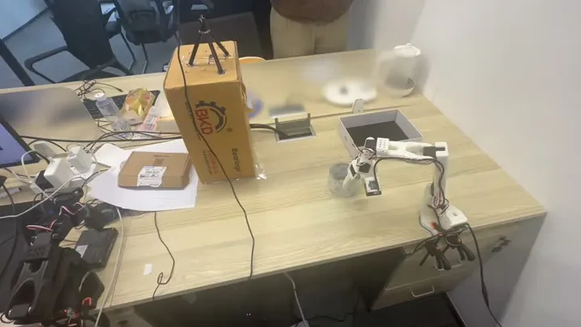

Embodied AI Engineer
从 π0 到 π0.6，把每一代 VLA 跑上真机。
独立复现 π0.6 RECAP 并在真机落地：策略从自主 rollout 与专家纠错中持续学习，标杆手机插拔任务吞吐约翻倍、失败率约减半。在 π0.5 中融合触觉，把双臂精细操作成功率从 30% 提到 70%。覆盖机械臂、灵巧手、人形三类本体。
≈2×
π0.6 RECAP 真机自改进：标杆任务吞吐约翻倍、失败率约减半
30%→70%
双臂精细操作成功率：π0.5 融合触觉 + RTC 异步推理
3 类
机械臂、灵巧手、人形机器人平台适配与部署经验
No.1
本科综合排名第一 · 绩点 3.98/5 · 2024 年国家奖学金
工作与教育
机器人实践 + 软件工程训练
2026.01 - 至今
具身智能全栈工程师
FMC3-Robotics · 上海
- 独立负责 π0.6 RECAP 真机自改进项目：标杆手机插拔任务吞吐约翻倍、失败率约减半。
- 从零搭建机械臂 + 智元灵巧手双臂平台，融合触觉使精细操作成功率从 30% 提升至 70%。
- 将操作策略迁移至傅利叶 GR2 人形机器人，接入 VLM 实现自然语言任务分解与多技能调度。
2026.09 - 2029.06

华东师范大学
软件工程硕士 · 统招非全日制 · 具身智能方向
- 2025 年毕业后专注备考，一次考取；2026.09 入学，边工作边攻读。
2021.09 - 2025.06

江苏科技大学苏州理工学院
计算机科学与技术 · 绩点 3.98/5 · 综合排名第一
- 2024 年国家奖学金；担任智能小车实验室负责人，参与智能车、边缘 AI、移动机器人等竞赛与项目。
项目经历
从策略到真机，从单臂到人形
π0.6 RECAP 真机自改进（松灵 PiperX 单臂）
独立负责。在松灵 PiperX 单臂平台复现并落地 π0.6（RECAP）自改进方案，以手机插拔精细操作为标杆任务，让策略在真机部署中通过自主 rollout 与专家干预纠错持续从经验中学习，逐步超越示教水平。
- 完成机械臂、夹爪、多路相机联调与遥操作示教链路，采集并清洗 200 条 demonstration 作为冷启动数据。
- 复现 RECAP 流程：offline RL 预训练并引入 advantage conditioning，融合示教、自主采集与专家干预三类异构数据。
- 部署后采集 autonomous rollout、记录失败并注入人工纠正，微调 value function 优化 advantage 估计；动作分块 + 异步推理降低执行延迟，完成多轮真机自我改进迭代。

π0.6
RECAP
Advantage Conditioning
Offline RL
Action Chunking
异步推理
机械臂 + 智元灵巧手双臂协作操作
基于 LeRobot 从零搭建机械臂 + 带触觉感知智元灵巧手的双臂协作平台，封装硬件接口形成可复用机器人适配层，并引入触觉反馈显著提升精细操作稳定性。
- 独立完成 teleoperation / data collection / inference / replay 四大模块适配，沉淀可复用机器人适配层。
- 采集双臂协同抓取与精细操作数据，基于 ACT、Diffusion Policy、π0.5 完成策略训练与真机部署。
- 在 π0.5 中引入 tactile encoder 融合触觉信号；结合 RTC 与异步推理降低延迟，提升双臂协同的时序一致性。

LeRobot
ACT
Diffusion Policy
π0.5
Tactile Encoder
LoRA
RTC
30% → 70%
双臂精细操作成功率提升
4 大模块
遥操作 / 采集 / 推理 / 回放适配层
傅利叶 GR2 人形机器人货物搬运与技能调度
将单臂平台操作策略迁移适配至傅利叶 GR2 人形机器人，打通本体—感知—控制—推理—技能调度全链路，并接入多模态大模型实现高层任务分解与闭环执行。
- 设计并安装 GR2 腕部相机支架，使用外骨骼遥操作采集分拣搬运数据，编写数据集格式转换与训练脚本。
- 基于 π0 与 GR00T 完成操作策略训练与验证，适配 get_state / send_action 接口并编写 inference server。
- 结合 DDS 深度集成 RoboOS，接入 RoboBrain VLM，实现自然语言任务的高层分解与多技能调度编排。
- 在 Isaac Sim 中基于 GR00T 验证宇树 G1 全身 loco-manipulation 搬运，检验策略跨人形本体的可迁移性。
π0
GR00T
DDS
RoboOS
RoboBrain VLM
Unitree G1
2 款人形
傅利叶 GR2 真机 · 宇树 G1 仿真
端到端
VLA 部署到货物搬运闭环验证
S101 单臂抓取策略验证
围绕 S101 机械臂"异形物体夹取入盒"任务，完成数采、训练到真实机械臂推理部署的端到端验证。
- 完成机械臂、夹爪、相机与示教采集链路联调，采集 500+ 条 demonstration。
- 基于 ACT、Diffusion Policy、π0 开展策略训练与验证，完成模型训练、推理部署和闭环测试。
- 对比不同策略在异形物体抓取、夹取入盒场景下的动作稳定性、任务完成效果与部署流程。

ACT
Diffusion Policy
π0
异步推理
真实部署
500+
示教数据采集
3 种策略
ACT / DP / π0 对比验证
更多项目
真机部署、方法复现与仿真验证
PiPER 双臂 sim2real 抓笔交接
仿真 / 真机
结合相机位姿对齐、数字孪生与仿真 / 真机数据混训，在双臂 PiPER 上完成抓笔、交接与放入笔筒的真机执行。
π0.5 JAX 双臂纸巾分拣
真机
基于 π0.5 JAX 版本完成纸巾分拣，结合异步推理与 RTC 优化执行链路，提升真机动作连续性与响应效率。
视觉关键点 retargeting 到灵巧手
真机
从 RGB 画面提取手部关键点与关节姿态，retargeting 到机器人灵巧手，实现稳定、准确的手内对指控制。
Minimax 井字棋 + π0.5 落子
真机
井字棋决策用 minimax 算法，落子由 π0.5 结合视觉 prompts 控制放置位置，用视觉定位补足语言跟随性差的问题。
openpi 复现 π0.5 Subtask 长任务拆解
仿真
复现 π0.5 中提出但官方未开源的 subtask 子任务拆解，将双杯放置长任务分解为可跟踪的阶段，并在仿真中完成执行。
BEHAVIOR-1K 微波炉爆米花复现
仿真
基于公开代码与权重复现开门、抓取、放入、关门的长任务，本地首轮 10 个实例成功 4 个，用于复现与失败分析。
宇树 G1 强化学习步态
仿真
在 MuJoCo Playground 中用 PPO 训练宇树 G1 崎岖地形速度跟踪策略（官方基线配置，1.81 亿仿真步）。
能力矩阵
工程、模型、数据、部署四线闭环
数据采集与数据集工程
Teleoperation、外骨骼采集、多相机数据、数据清洗、Replay、LeRobot Dataset、Demonstration 管理。
机器人平台适配
完成机械臂、灵巧手、人形机器人平台的 get_state / send_action、相机、夹爪、触觉与控制接口适配。
策略模型训练
基于 ACT、Diffusion Policy、π0 / π0.5 / π0.6、GR00T 开展策略训练与对比，复现 RECAP 的 offline RL 与 advantage conditioning 自改进流程。
真机推理与实时执行
构建 inference server，支持异步推理、RTC、Action Chunk 执行、延迟优化与真实设备闭环测试。
多模态感知与融合
围绕 RGB 相机、腕部相机、触觉 encoder、VLM/RoboBrain VLM 进行多模态状态输入与反馈融合。
技能调度与任务编排
集成 RoboOS Skill 调用、高层任务分解、多技能调度与分拣流程控制。
评估与失败分析
关注成功率、动作稳定性、Baseline 对比、失败案例归因、数据分布检查与策略泛化表现。
AI 辅助工程开发
结合 Cursor、Claude Code、Codex 提升机器人接口适配、数据脚本开发、训练调参与实验迭代效率。
竞赛与荣誉
算法、机器人与综合能力积累
奖学金
2024 国家奖学金
综合排名第一；连续三次人民奖学金、三好学生，国家励志奖学金。
边缘 AI
ICAN 大学生创新创业大赛「边缘 AI+行业」挑战赛
队长，全国二等奖。
智能车
全国大学生智能车竞赛智慧物流创意组
队长，全国三等奖 / 华东赛区二等奖。
模型训练
全国大学生智能车竞赛智慧医疗创意组
负责模型训练与量化，华东赛区二等奖。
机器人
航天杯移动机器人 AI 创新技术挑战赛
队长，全国三等奖。
科研实践
江苏省大学生创新创业训练计划项目
期刊：基于 OpenMV 的新型智能门锁设计。